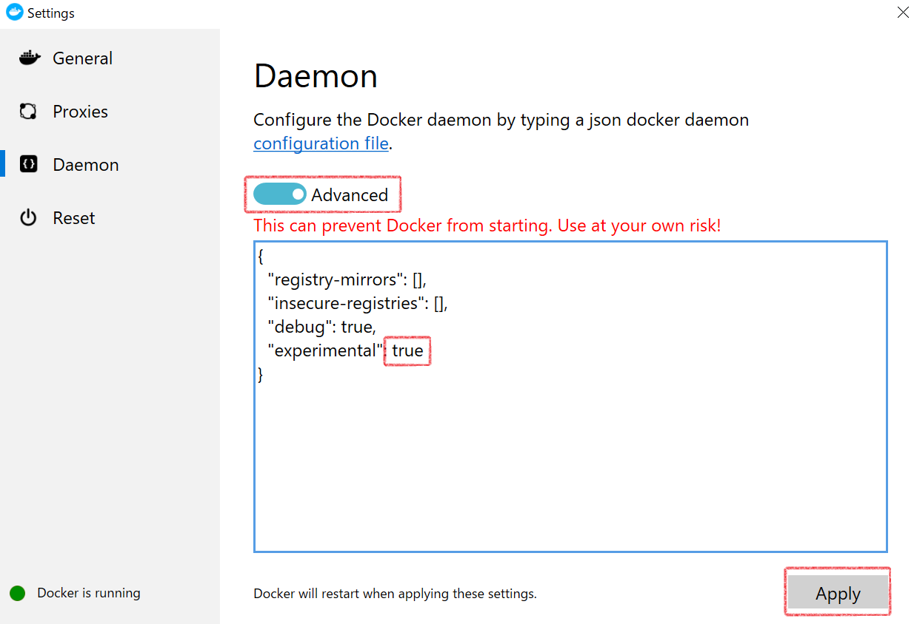

停止中のコンテナをまとめて削除する
下記のLinuxコマンドで停止中のコンテナをまとめて削除することができる。$ docker rm $(docker ps -q -f status=exited)
docker-composeのインストール
ターミナルのCURLコマンドでdocker-composeをダウンロードおよびインストールすることができる。ターミナル（Git for Bash, power shell)などを起動し、下記のコマンドを実行する。
curl -L https://github.com/docker/compose/releases/download/1.25.0-rc4/docker-compose-`uname -s`-`uname -m` -o bin/docker-compose chmod +x bin/docker-compose
インストールできたか確認する。（バージョンを確認）
$ docker-compose --version

参考サイト
runコマンドが効いていない（コンテナが作成できない) | Docker Desktop for Windows
Power Shellにて下記のコマンドを実行する。Invoke-WebRequest https://aka.ms/Debug-ContainerHost.ps1 -UseBasicParsing | Invoke-Expression参考サイト
イメージをまとめて削除する
$docker rm `docker ps -f "status=exited" -q`
コンテナを再スタートする | docker restart コンテナ名
$ docker restart コンテナ名(または、コンテナID)
例
$ docker restart 069863c72e56
現在、起動しているDockerのコンテナを一覧表示（停止中のコンテナも一覧表示可）| docker ps
コンテナを一覧表示$ docker ps
停止中のコンテナも一覧表示する場合
$ docker ps -a
コンテナを停止する | docker stop コンテナID
コンテナを停止する（コンテナIDが069863c72e56である場合docker stop 069863c72e56docker ps -a」コマンドで実行するとコンテナが停止していることが確認できる。STATUSがExited(終了しました)になっている。
docker stopコマンドが反応しない場合、restartコマンドでコンテナを再起動することにより治ることがある。
docker restart 069863c72e56再スタートする場合
docker start 069863c72e56
docker runのエラー | no matching manifest for windows/amd64 10.0.18362 in the manifest list entries
Docker Deskctop(Windows)の常駐アイコンから設定することにより修正が可能。手順
-
Windowsの右下にある常駐アプリアイコンの欄から、Docker Deskctopを右クリックし、Settingsを選択。
-
左メニューから「Demon」を選択。Basicとなっているスイッチを切り替えて「Advanced」にする。
-
「"experimental":true」を記述し、Applyボタンを押せば、修正設定終わり。

docker runのエラー | no matching manifest for windows/amd64 10.0.18362 in the manifest list entries
ボリュームは永続するデータの保存先である。コンテナとボリュームは兄弟関係のようなもの。または、パソコンと外部HDDの関係に似ている。
通常、コンテナ内のデータ（ファイルなど）はコンテナが削除されるとデータも一緒に消える。
データベースなどコンテナを削除してもデータを消したくない場合、ボリュームを用いる。
ボリュームからデータが消えないのはホストPC（普段のPC環境）にデータを保存しているからである。
コンテナでボリュームを用いる
「docker run」でコンテナを作成する際、「-v 〇〇」のような形でボリュームを指定することになる。docker runでのボリューム指定の例
docker run -it --name test_name -p 8080:80 -v c:/Users/user_xxx/git:/var/www/html test_image:5.6「-v」でホストPCのディレクトリとコンテナ内のディレクトリを結び付けている。
「c:/Users/user_xxx/git」はホストPCのディレクトリであり、「/var/www/html」はコンテナ内でのディレクトリである。